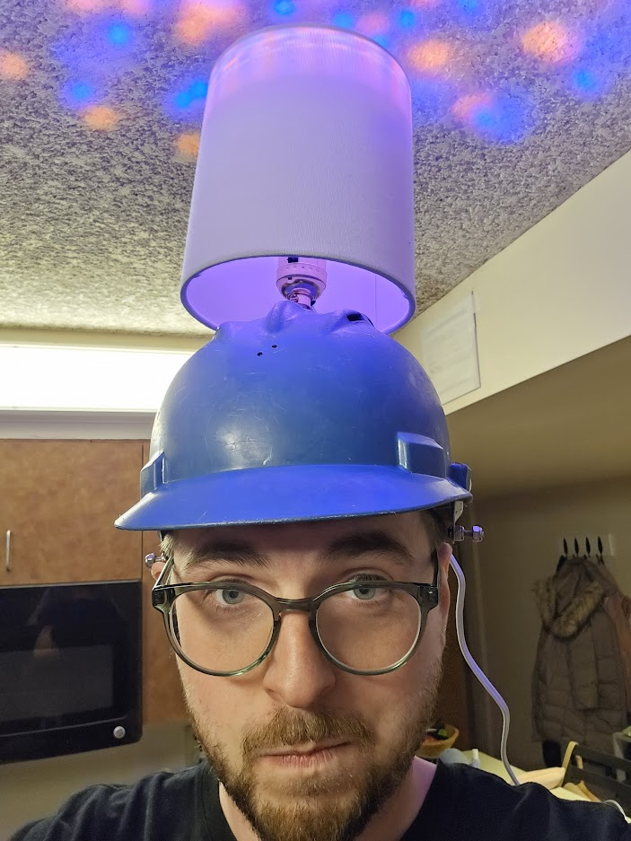
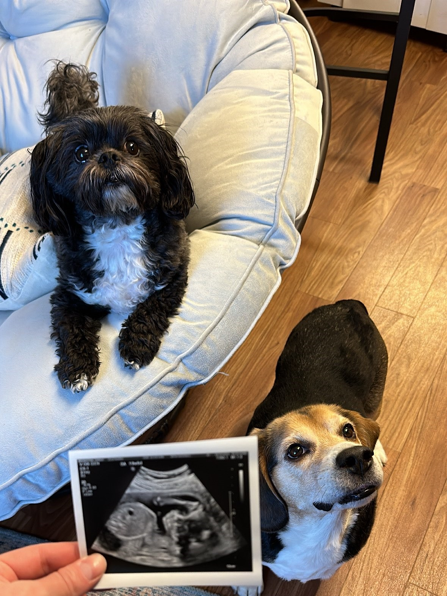

Mini Bio
Hello, my name is Brian Bougton. My Birthday is August 26th, 1992. I was born in High Falls, New York.
I am a Business Analytics Major at SUNY New Paltz, and I am interested in learning about data mining and machine learning because I enjoy number crunching and statistics.
I am currently learning analytics on RStudios and Python.
The current models I can build include linear regression, logistic regression, tree, random forest, k-nn, neural networks, and naive bayes.
Going forward, I would like to learn more about data cleaning and feature selection because they are so vital do the performance of the model.

Meet The Family
My family is the most important part of my life.
It is made up of my wife Sarah, our two dogs Lucky and Ranger, and our soon-to-be-son Bennett.
Sarah is training to become a mental health counselor at SUNY New Paltz.
Lucky is a 7-year-old Beagle that we rescued after his previous owner died. He weighed over 50 pounds and was very out of shape.
Now, he is a healthy 35 pounds and can enjoy running around.
Ranger is a 4-year-old shih tzu bichon and acts like a little human that is obsessed with watching television and going on long walks.
Together we enjoy hikes on either the “River to Ridge” trail or the “Mohonk Preserve”.